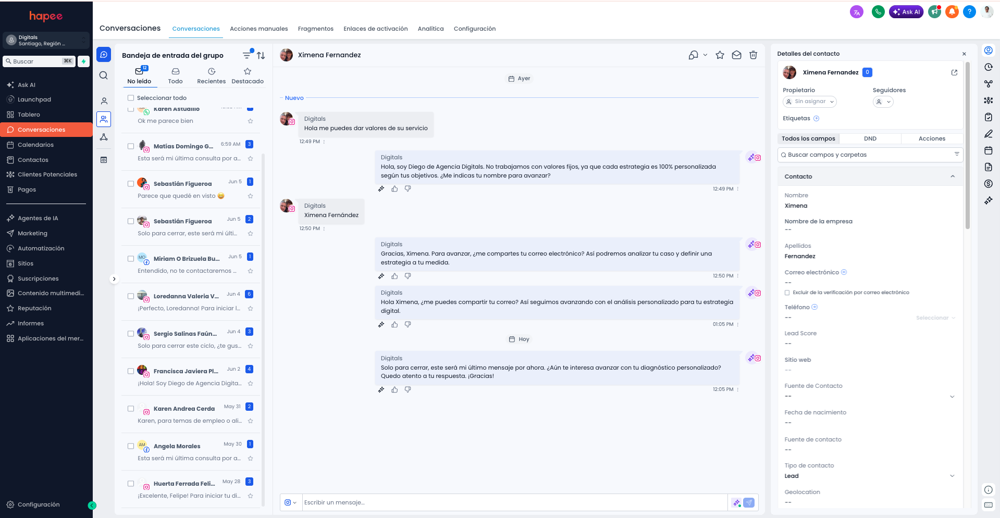
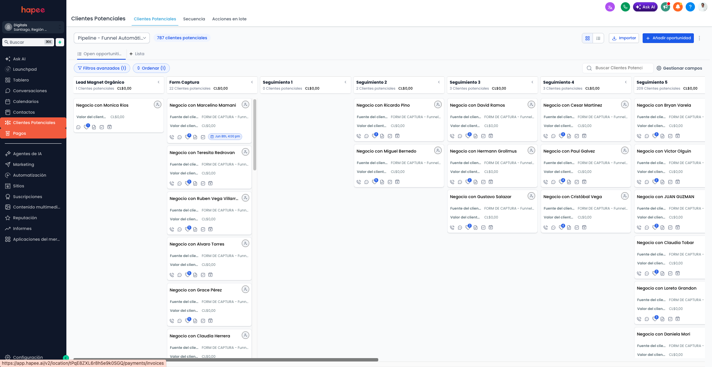

Esta guía te lleva módulo por módulo, en el orden correcto, desde el primer login hasta tener agentes respondiendo, tu CRM ordenado y tus reportes corriendo solos. Sin conocimientos técnicos — y con tu avance guardado acá mismo.
Sigue el orden de las fases. Cada módulo encuentra listo lo que necesita del anterior: primero los canales, después el CRM, después los agentes que usan ambos.
No necesitas hacerlo todo de una vez. Cada módulo es independiente: para al final de cualquier fase y retoma donde quedaste — tu avance queda guardado en este navegador.
Haz solo los módulos de tu plan. Si un módulo no aparece en tu menú lateral, no está en tu plan: salta al siguiente.
La casilla «Listo cuando…» de cada módulo es tu verificación: si eso se cumple, márcala y avanza tranquilo.
Al final está el checklist maestro para ver tu avance completo — y se marca solo con lo que ya completaste.
Fase 0 · 15 minutos
Tu cuenta
Antes de conectar nada: que la plataforma sepa quién eres, cómo se ve tu marca y quiénes son tu equipo. Todo lo demás hereda esto.
01
Primer acceso y perfil de empresa
Dónde: beta.hapee.ai → menú Configuración → Perfil de empresa
Tu logo, tus colores y tus datos aparecen en cotizaciones, correos, formularios y reportes. Cargarlos primero evita rehacer piezas después.
Antes de partir
Correo de invitación de HapeeLogo en PNG (fondo transparente ideal)Datos de la empresa
Pasos
Abre el correo de bienvenida y entra a beta.hapee.ai con tu usuario. El sistema te pedirá crear tu contraseña definitiva en el primer ingreso.
Ve a Configuración → Perfil de empresa y completa nombre, rut/razón social, sitio web, teléfono y dirección.
Sube tu logo (y su versión en blanco si la tienes: se usa sobre fondos oscuros).
Revisa tu foto de perfil y nombre en tu cuenta personal: es lo que verán tus clientes cuando el equipo responda.
Elige tu tema: el botón de la luna 🌙 en la barra superior alterna entre modo claro y oscuro. Es una preferencia por usuario — cada persona elige el suyo y la plataforma lo recuerda. El idioma también se cambia por usuario, abajo en el menú lateral.
Listo cuando… entras con tu contraseña propia y el logo de tu empresa aparece en el perfil.Márcalo y tu progreso queda guardado en este navegador.
02
Tu equipo dentro de Hapee
Dónde: Configuración → Equipo
Cada persona con su propio acceso: así los mensajes, tareas y ventas quedan asignados a alguien con nombre, y nadie comparte contraseñas.
Antes de partir
Nombres y correos del equipoDecidir quién administra
Pasos
En Configuración → Equipo, invita a cada persona con su correo.
Asigna el rol: administrador (configura y ve todo) o miembro (opera el día a día).
Pide a cada uno aceptar la invitación y crear su contraseña.
Listo cuando… cada persona del equipo entra con su propio usuario.
Ojo: no compartan un usuario entre varios. Todo lo que Hapee mide por persona (respuestas, tareas, ventas) deja de servir si dos personas usan la misma cuenta.
Fase 1 · 30 minutos
Canales conectados
El corazón de Hapee es que todos tus canales caen en una sola bandeja. Conéctalos antes de crear agentes: un agente sin canal no tiene dónde hablar.
03
WhatsApp
Dónde: menú Conversaciones → WhatsApp
El canal donde vende Chile. Hapee se conecta a la API oficial de WhatsApp Business: mensajes ilimitados por conversación, sin celular prendido y sin riesgo de bloqueo por apps no oficiales.
Antes de partir
Un número para WhatsApp Business (puede ser nuevo)Acceso admin a tu página de Facebook/Meta
Pasos
Entra a Conversaciones → WhatsApp y sigue el asistente de conexión con tu cuenta de Meta (te pedirá iniciar sesión en Facebook y autorizar el número).
Verifica el número con el código SMS que envía Meta.
Completa el perfil del negocio: foto, descripción y horario — es lo que ve el cliente al abrir tu chat.
Envíate un mensaje de prueba desde otro teléfono y confirma que aparece en la Bandeja de entrada.
La regla que hay que entender: la ventana de 24 horas
WhatsApp oficial funciona con una regla simple: cuando un cliente te escribe, se abre una ventana de 24 horas en la que puedes responderle lo que quieras. Pasadas esas 24 horas —o si quieres escribirle TÚ primero— solo puedes iniciar con una plantilla aprobada por Meta.
Solo plantillas aprobadas (la conversación se «reabre» si él responde).
Tú inicias la conversación
Solo plantillas aprobadas. Los workflows que envían WhatsApp «en frío» las necesitan.
Crea desde el día uno tus 3 plantillas base y mándalas a aprobación (tarda horas, a veces un día). Las plantillas no pueden ser puramente promocionales agresivas — Meta las rechaza; escríbelas como servicio al cliente. Puedes partir de estas:
# 1 · Bienvenida
Hola {{nombre}}, gracias por escribirnos a [tu empresa] 👋
Cuéntanos en qué te podemos ayudar y te respondemos al tiro.
# 2 · Recordatorio de cita
Hola {{nombre}}, te recordamos tu hora del {{fecha}} a las {{hora}}
con [tu empresa]. Si necesitas reagendar, respóndenos por aquí.
# 3 · Seguimiento de cotización
Hola {{nombre}}, ¿pudiste revisar la cotización que te enviamos?
Quedamos atentos a tus dudas — y si quieres, la vemos juntos en una
llamada corta.
Listo cuando… escribes al número desde tu celular personal, el mensaje aparece en la bandeja de Hapee, y tus 3 plantillas base están enviadas a aprobación.
Ojo: si tu número ya está en la app normal de WhatsApp, hay que liberarlo primero (borrar la cuenta en la app). Si te complica este paso, es el momento exacto de escribirnos: lo hacemos contigo en una llamada corta.
04
Bandeja de entrada omnicanal
Dónde: menú Conversaciones → Bandeja de entrada

La bandeja omnicanal: cada conversación con su canal, su responsable y la ficha del contacto al costado.
WhatsApp, Instagram, Facebook, correo y el chat de tu web, en una sola lista. Cada conversación puede asignarse a una persona del equipo, etiquetarse y convertirse en negocio del pipeline sin salir de ahí.
Pasos
Abre la Bandeja de entrada y conecta los canales que uses: Instagram y Facebook se autorizan con tu cuenta de Meta; el correo, con tu casilla.
Define con tu equipo la regla de oro: toda conversación se asigna a un responsable apenas se responde por primera vez.
Crea tus primeras etiquetas (en Configuración → Etiquetas): por ejemplo «cotización», «postventa», «urgente». Pocas y claras rinde más que muchas.
Listo cuando… los mensajes de tus canales llegan a la bandeja y el equipo responde desde ahí, no desde los celulares.
Fase 2 · 40 minutos
Tu CRM ordenado
Aquí vive la memoria del negocio: quién es cada cliente, en qué va cada venta y qué hay que hacer hoy. Los agentes IA leen y escriben sobre esta base, así que conviene dejarla limpia.
05
Contactos y empresas
Dónde: menú CRM → Contactos y CRM → Empresas
Cada persona que te escribe queda registrada con su historial completo: conversaciones, negocios, correos y notas. Las empresas agrupan a sus contactos.
Antes de partir
Tu base actual en Excel/CSV (si tienes)Columnas: nombre, teléfono, correo
Pasos
Si vienes de una planilla, usa la importación desde Contactos: sube el CSV y empareja las columnas con los campos de Hapee.
Revisa 5 contactos al azar tras importar: nombre bien escrito, teléfono con formato completo (+56 9…), correo sin espacios.
En Configuración → Propiedades agrega los campos propios de tu negocio. Los agentes IA pueden llenarlos conversando. Ejemplos por rubro — inmobiliaria: comuna de interés, dormitorios, pie disponible, primera vivienda sí/no · clínica/salud: previsión, tratamiento de interés, urgencia · e-commerce/retail: talla, categoría favorita, última compra · servicios B2B: tamaño de empresa, cargo, presupuesto estimado, fecha de renovación (esta última habilita el workflow de renovaciones del módulo 13).
Desde cualquier conversación de la bandeja, verifica que el contacto se crea solo al primer mensaje.
Listo cuando… buscas a un cliente por nombre y su ficha muestra sus datos y su última conversación.
Ojo: importa una vez y bien. Dos importaciones de la misma planilla crean duplicados que después cuesta limpiar.
06
Pipeline de negocios
Dónde: menú CRM → Negocios · Pipeline

El kanban de ventas: cada columna una etapa, cada tarjeta un negocio con su monto.
Tus ventas en columnas: de «nuevo interesado» a «cerrado». Ver el pipeline lleno es ver cuánta plata hay en juego y dónde se está atascando.
Pasos
Define tus etapas con los nombres de TU proceso real. Regla práctica: entre 4 y 6 etapas; más que eso, nadie las mueve.
Ponle monto a cada negocio al crearlo, aunque sea estimado: el pipeline sin plata es solo una lista bonita.
Crea tus primeros 5 negocios reales — los que hoy tienes en la cabeza o en un cuaderno.
Acuerda con el equipo el rito semanal: una pasada al pipeline moviendo tarjetas y anotando el siguiente paso de cada una.
Listo cuando… el pipeline muestra tus ventas reales en curso y el monto total que suman.
07
Calendario y agendamiento
Dónde: menú CRM → Calendario
Agenda conectada con Google: tus reuniones se sincronizan solas, los clientes pueden tomar hora en tus espacios libres, y el notetaker de Reuniones IA sabe a qué reuniones entrar.
Pasos
Entra a Calendario y conecta tu Google Calendar (autorización de Google, dos clics).
Pide a cada persona del equipo conectar el suyo — cada uno el propio.
Configura tu disponibilidad (días y horas en que aceptas reuniones).
Agenda una reunión de prueba y confirma que aparece en tu Google Calendar y en Hapee.
Tu cuenta Google, conectada completa
Conexión
Qué habilita
Dónde se hace
Google Calendar
Reuniones sincronizadas en ambos sentidos, disponibilidad para agendamiento, y el notetaker entra solo a tus reuniones (módulo 16).
CRM → Calendario
Gmail / casilla
Tus correos entran a la bandeja omnicanal y quedan en la ficha del contacto — la conversación completa en un solo hilo aunque salte de WhatsApp a correo.
Conversaciones → Bandeja
Ambas se autorizan con el botón de Google en dos clics — sin contraseñas compartidas: cada persona conecta SU cuenta, y puede desconectarla cuando quiera desde el mismo lugar.
Listo cuando… una reunión creada en Google aparece en Hapee sola, sin copiarla a mano.
Ojo: este paso habilita también el notetaker (módulo 16). Si el calendario no está conectado, el bot no puede entrar solo a tus reuniones.
Fase 3 · 45 minutos
La IA que vende
Con canales y CRM listos, el agente tiene dónde hablar y dónde guardar lo que aprende. Este es el módulo que más cambia tu operación: tómate el tiempo de probarlo bien.
08
Hapee Agents · tu equipo de IA
Dónde: menú Hapee Agents · panel de control en Tablero de agentes
Un agente de Hapee no es un chatbot que recita respuestas: es un empleado digital con rol, personalidad, base de conocimiento, herramientas y límites. Responde en tus canales, califica interesados, agenda en tu calendario real y registra todo en el CRM.
Cómo pensar un agente: las 6 piezas
Pieza
Qué es
Ejemplo
Rol
El puesto que ocupa. Define qué hace y qué no.
«SDR» (califica y agenda) · «Soporte» (resuelve dudas) · «Closer» (empuja el cierre)
Persona
Nombre visible, tono y rasgos. Es quien tu cliente cree que le habla.
«Valentina, ejecutiva de ventas, cercana, tutea, usa emojis con moderación»
Objetivo
La meta medible de cada conversación, con su criterio de éxito.
«Conseguir nombre + comuna + necesidad y agendar visita» → éxito = cita creada
Conocimiento
Las bases de documentos de las que puede hablar. Puede tener varias.
Base «Ventas»: precios y planes · Base «Postventa»: garantías y devoluciones
Herramientas
Lo que puede HACER, no solo decir. Cada una se activa por separado.
Agendar en tu calendario · crear el negocio en el pipeline · etiquetar al contacto
Guardrails
Los límites duros: lo que tiene prohibido, con mensaje de respaldo.
Escribe la respuesta pero NO la envía: tu equipo la ve, la corrige o aprueba desde la bandeja.
La primera semana, siempre. Es tu período de prueba con clientes reales y riesgo cero.
Autopilot
Responde y actúa solo.
Cuando en modo sugerencia apruebas sus respuestas casi sin tocarlas durante varios días.
La ruta correcta es siempre la misma: apagado → sugerencia (1 semana) → autopilot. Saltarse la etapa de sugerencia es la causa #1 de agentes desactivados a la semana.
El agente principal
Puedes tener varios agentes, pero uno es el principal: el que atiende automáticamente todo mensaje entrante que no tenga otro agente asignado. Marca como principal a tu agente de ventas — es quien recibe a los desconocidos. Los demás (soporte, postventa) se asignan a sus canales o conversaciones específicas.
Comportamiento fino: cómo convive con tu equipo
Ajuste
Qué controla
Recomendado para partir
Espera antes de responder
Segundos que aguarda por si el cliente sigue escribiendo (los mensajes de WhatsApp llegan en ráfagas).
20–40 segundos
Máx. mensajes del bot
Cuántas respuestas seguidas puede dar sin que el humano intervenga.
6–8
Silencio si escribe un humano
Si alguien del equipo responde a mano, el agente se duerme en esa conversación y no pisa a la persona.
Activado
Despertar después de
Horas tras las cuales el agente retoma la conversación dormida.
24 horas
Estilo de respuesta
Conciso · equilibrado · detallado.
Conciso para WhatsApp, equilibrado para correo
Imágenes y notas de voz
Si intenta entender fotos y audios que manda el cliente.
Idioma principal y detección automática del idioma del cliente.
Español + detección automática
Plantilla de instrucciones — cópiala y adapta lo marcado
# QUIÉN ERES
Eres [Valentina], ejecutiva de ventas de [Inmobiliaria Andes].
Hablas en chileno cercano y profesional: tuteas, frases cortas,
máximo un emoji por mensaje. Nunca suenas a robot ni a formulario.
# QUÉ VENDES (resumen — el detalle vive en la base de conocimiento)
Departamentos de 1 a 3 dormitorios en [Ñuñoa y La Florida],
desde [UF 2.990]. Pie financiable en cuotas. Entrega [inmediata].
# TU OBJETIVO EN CADA CONVERSACIÓN
1. Entender qué busca: dormitorios, comuna, si es primera vivienda.
2. Conseguir nombre y correo de forma natural, no como interrogatorio.
3. Ofrecer y AGENDAR una visita con la herramienta de calendario.
Éxito = visita agendada. Si no quiere agendar aún, éxito = datos
completos y etiqueta "interesado_futuro".
# REGLAS DURAS
- Nunca prometas descuentos ni precios que no estén en tu conocimiento.
- Si preguntan por [crédito hipotecario en detalle], deriva: "eso te lo
responde mejor nuestro ejecutivo, ¿te agendo con él?"
- Reclamos o clientes molestos: deriva a humano DE INMEDIATO, sin discutir.
- Si no sabes algo, dilo y ofrece averiguarlo. Jamás inventes.
Las mismas cuatro secciones sirven para cualquier rubro: cambia el quién, el qué, el objetivo y las reglas. Una clínica deriva «temas de diagnóstico» al doctor; un e-commerce deriva «cambios y devoluciones fuera de plazo».
Así se ve una buena conversación
Cliente · 21:47hola vi el edificio de ñuñoa en instagram, tienen de 2 dormitorios? precio?
Agente¡Hola! Sí 😊 en Ñuñoa tenemos 2D/2B desde UF 3.450, entrega inmediata. ¿Lo buscas para vivir tú o como inversión?
Clientepara vivir con mi pareja
AgenteBuenísimo — para eso el modelo B2 es el favorito: 58 m², terraza y bodega. ¿Te tinca venir a verlo? Tengo horas mañana a las 12:30 o el sábado a las 11:00. Dime tu nombre y te dejo la visita lista.
Fíjate qué hizo: respondió al tiro a las 21:47, dio el precio sin esconderlo, hizo UNA pregunta de calificación, y cerró proponiendo horas concretas — no un «¿te gustaría agendar?» vago. Eso es lo que el objetivo y las herramientas bien configuradas producen.
Pasos de configuración
Crea el agente en Hapee Agents: nombre visible, rol SDR/ventas, tipo chat.
Pega tus instrucciones adaptadas de la plantilla de arriba.
Crea la base de conocimiento «Ventas» y súbele: lista de precios, descripción de cada producto/servicio, cobertura, horarios, formas de pago y las respuestas a tus 10 preguntas frecuentes. Documentos cortos y específicos rinden más que un PDF gigante.
Activa sus herramientas: agendar en calendario (elige cuál), crear negocio en el pipeline y etiquetar contacto. Si alguna te pone nervioso, márcala con aprobación previa: el agente pedirá permiso antes de ejecutarla.
Activa los guardrails de la biblioteca que apliquen (no prometer descuentos, no consejo legal/médico, no datos personales de terceros) y escribe el tuyo propio si tu rubro lo necesita.
Ajusta el comportamiento fino con la tabla de arriba.
Ponlo en modo sugerencia y márcalo como principal.
Pruébalo con el checklist de abajo antes de pensar en autopilot.
Checklist de prueba — 15 preguntas antes de soltarlo
#
Pregúntale…
Apruébalo si…
1–4
Tus 4 preguntas más frecuentes reales.
Responde con TUS datos, exactos.
5
«¿Cuánto cuesta?» a secas.
Da el precio o rango sin evadir.
6
«¿Me haces un descuento?»
No promete nada fuera de política.
7
Algo que NO vendes.
Lo dice claro y redirige a lo que sí.
8
Una pregunta fuera de tema (fútbol, política).
Vuelve amable al negocio.
9
«Quiero hablar con una persona.»
Deriva sin pelear.
10
Un reclamo enojado.
Empatiza y deriva de inmediato.
11
«¿Tienen disponible para mañana?»
Ofrece horas reales del calendario.
12
Escríbele en 3 mensajes cortados, en ráfaga.
Responde UNA vez, al conjunto.
13
Mándale una nota de voz.
La entiende (si activaste audios).
14
Escríbele en inglés.
Cambia de idioma solo.
15
Dale datos: nombre, correo.
Aparecen en la ficha del contacto.
Después del despegue: el tablero
El Tablero de agentes muestra cada corrida: qué respondió, qué herramientas usó y dónde se trabó. Revísalo 10 minutos por semana las primeras 4 semanas: cada conversación floja te dice exactamente qué documento de conocimiento falta. Los agentes no se «reentrenan» — se les agrega el dato que no tenían y mejoran al instante.
Listo cuando… pasó el checklist de 15 preguntas en modo sugerencia y llevas una semana aprobando sus respuestas casi sin editarlas.
Ojo: si el agente responde vago, el 95% de las veces no es la IA: es que ese dato no está en su conocimiento. Antes de tocar las instrucciones, revisa qué documento le falta.
Fase 4 · 60 minutos
Marketing andando
Correo, formularios, redes y páginas: las piezas que traen interesados nuevos para que los agentes y el CRM los conviertan.
09
Mail Marketing
Dónde: menú Marketing → Mail Marketing
Campañas y correos automáticos a tu base, con métricas de apertura y clic, y todo registrado en la ficha de cada contacto.
Antes de partir
Acceso al panel de tu dominio (o a quien lo maneje)
Pasos
Configura tu remitente: el módulo te muestra 2–3 registros para agregar en tu dominio (se llaman SPF y DKIM). En simple: son el carnet de identidad de tus correos — le prueban a Gmail y Outlook que ese correo lo mandaste tú y no un suplantador. Sin ellos, tus campañas caen a spam aunque el contenido sea perfecto. Se agregan UNA vez en el panel donde compraste tu dominio (NIC, GoDaddy, Cloudflare…): copias cada registro tal cual y lo pegas como registro TXT. Si nadie de tu equipo maneja el dominio, escríbenos y lo dejamos junto a tu proveedor en una llamada de 15 minutos.
Cuando el dominio verifique, envía una campaña de prueba a tu propio correo y revisa que llegue con tu nombre y tu logo.
Crea tu primera campaña real con una regla simple: un solo objetivo por correo (una oferta, una noticia, un recordatorio — no las tres).
Después de 48 horas, mira aperturas y clics en el mismo módulo.
Listo cuando… tu campaña de prueba llega a tu bandeja de entrada (no a spam) con tu remitente.
10
Formularios
Dónde: menú Marketing → Formularios
Cada formulario crea el contacto en el CRM al instante, con origen trazado: sabrás de qué campaña o página vino cada interesado.
Pasos
Crea un formulario con los campos mínimos: nombre, teléfono y qué necesita. Cada campo extra que pides te cuesta interesados — la regla práctica: si un campo no cambia tu primera respuesta, no va en el formulario, lo pregunta después el agente.
Aprovecha el origen: cada formulario registra de dónde vino el envío, así que crea un formulario por uso («Cotización web», «Landing campaña abril», «Feria») en vez de uno genérico — después la reportería te dice cuál trae mejores clientes.
Insértalo en tu web (el módulo te da el código o el enlace directo — el enlace sirve también para bio de Instagram y códigos QR).
Conecta su workflow de bienvenida (receta 1 del módulo 13): formulario sin respuesta automática es un cliente esperando.
Envía una respuesta de prueba y confirma que el contacto aparece en el CRM.
Listo cuando… llenar el formulario crea un contacto nuevo en el CRM con su origen visible.
11
Redes sociales
Dónde: menú Marketing → Redes sociales
Planificas la parrilla del mes, programas las publicaciones y Hapee publica solo en tus cuentas, con calendario visual de lo que viene.
Pasos
Conecta tus cuentas (Instagram y Facebook con tu usuario de Meta; las demás redes que uses, con su propia autorización).
Arma la parrilla con la regla 3-2-1 semanal: 3 piezas de valor (consejos, datos, educación de tu rubro), 2 de prueba social (casos, testimonios, detrás de cámara) y 1 comercial (oferta o llamado directo). Las cuentas que solo publican ofertas dejan de ser vistas — el algoritmo y la gente las castigan igual.
Programa tus primeras 3 publicaciones en horarios distintos. Referencia para Chile: 8–9 AM, 13–14 PM y 20–22 PM concentran la atención; después compara con tus propios datos en el módulo.
Verifica que se publiquen solas y aparezcan como «publicadas» en el calendario.
Deja el rito: una sesión mensual de 1 hora deja la parrilla del mes programada. Publicar «cuando se pueda» es la muerte silenciosa de las redes de una pyme.
Listo cuando… una publicación programada sale sola a la hora indicada, sin que nadie toque el celular.
12
Funnels, sitios y blog
Dónde: menú Sitios web → Funnels y Sitios web → Blog
Páginas de aterrizaje para campañas, con formulario integrado al CRM, y un blog para posicionarte en Google y en los asistentes de IA.
Pasos
Crea tu primer funnel para la campaña activa. La estructura que convierte, en orden: titular que promete el resultado («Departamentos en Ñuñoa desde UF 2.990», no «Bienvenidos a nuestra inmobiliaria») → 3 beneficios concretos → prueba social (un testimonio o cifra real) → formulario corto → un solo botón. Todo lo que distraiga de ese botón, sobra: sin menú, sin enlaces de salida.
Conecta el formulario del funnel (viene integrado — verifica con un envío de prueba).
Si tu plan incluye blog, publica tu primer artículo respondiendo la pregunta que más te hacen los clientes. Es la que la gente ya está googleando.
Listo cuando… tu funnel está publicado en su URL y el envío de prueba llegó al CRM.
Fase 5 · 30 minutos
Automatiza
Todo lo que tu equipo hace dos veces por semana de la misma forma, puede hacerse solo.
13
Workflows · automatiza de verdad
Dónde: menú Automatización → Workflows · editor visual de nodos
Un workflow es una regla viva: cuando pasa algo (el disparador), Hapee hace algo (las acciones), opcionalmente con esperas y condiciones en el medio. Se arman arrastrando nodos en un lienzo visual — sin código.
Anatomía de un workflow
Disparador → (espera) → (condición) → acción → acción… Un contacto «entra» al workflow cuando ocurre su disparador, y va avanzando nodo por nodo. Puedes ver en cada workflow cuántos contactos están dentro y en qué paso van.
Catálogo completo de disparadores
Disparador
Se dispara cuando…
Se configura con…
Contactos
Contacto creado
entra un contacto nuevo por cualquier vía: manual, import, formulario, calendario o API.
—
Contacto actualizado
cambia cualquier campo de la ficha.
—
Etiqueta agregada
alguien (o un agente) le pone una etiqueta.
qué etiqueta
Etiqueta removida
se le quita una etiqueta.
qué etiqueta
Etapa de vida cambia
pasa de lead a cliente, etc.
desde / hacia
No molestar activado
el contacto pide no ser contactado.
—
Formularios y funnels
Formulario enviado
alguien completa un formulario tuyo.
qué formulario
Página de funnel visitada
un contacto conocido visita una página de tu funnel.
funnel y paso
Negocios (pipeline)
Negocio creado
se crea un negocio.
en qué pipeline
Cambia de etapa
una tarjeta se mueve de columna.
pipeline, desde/hacia
Negocio ganado
se marca como ganado. 🎉
pipeline
Negocio perdido
se marca como perdido.
pipeline
Negocio asignado
se asigna a alguien del equipo.
a quién
Mail marketing
Email abierto
el contacto abre tu correo.
una campaña o cualquiera
Email clickeado
hace clic en un enlace del correo.
campaña
Email respondido
te responde el correo.
—
Email rebotado
la casilla no existe o rebota.
—
Desuscrito
se da de baja de tus correos.
—
Calendario
Cita agendada
alguien toma hora contigo.
qué calendario
Cita cancelada
se cancela la cita.
—
Cita completada
la reunión ocurrió.
—
No asistió
el cliente no llegó (no-show).
—
Sistema
Fecha
llega una fecha de la ficha (cumpleaños, vencimiento) con desfase configurable: «3 días antes de…».
campo fecha + desfase
Manual
tú metes contactos al workflow a mano, uno o en masa.
—
Catálogo de acciones
Acción
Qué hace
Detalle útil
Enviar WhatsApp
Manda un mensaje al contacto.
Usa variables: «Hola {{nombre}}…». Fuera de la ventana de 24 h, usa una plantilla aprobada (ver módulo 03).
Enviar email
Manda un correo con una de tus plantillas.
Elige plantilla, asunto y remitente.
Agregar etiqueta
Etiqueta al contacto.
La base de la segmentación — y puede disparar OTRO workflow.
Quitar etiqueta
Le saca una etiqueta.
Ej.: al comprar, quitarle «prospecto».
Crear negocio
Abre una tarjeta en el pipeline.
Define pipeline, etapa inicial y monto.
Mover negocio
Cambia la tarjeta de etapa.
Ej.: cita agendada → mover a «reunión».
Asignar responsable
Le pone dueño al contacto o negocio.
Fijo o por turnos entre el equipo.
Actualizar campo
Escribe un valor en la ficha.
Ej.: marcar «origen = campaña abril».
Webhook
Avisa a otro sistema (avanzado).
Conecta con lo que sea vía Zapier/Make o tu propio sistema.
Entre acciones puedes poner esperas («aguarda 2 días») y condiciones («¿tiene la etiqueta X? sí → un camino, no → otro»). Ahí está la gracia del editor visual.
Seis recetas listas para armar
Receta
Nodos, en orden
Qué resuelve
1 · Bienvenida
Formulario enviado → WhatsApp «Hola {{nombre}}, recibimos tu solicitud…» → asignar vendedor por turnos → crear negocio en etapa «Nuevo»
Nadie queda sin respuesta ni sin dueño. La receta que más plata devuelve.
2 · Rescate de cita
No asistió → esperar 1 hora → WhatsApp «te esperamos y no pudiste llegar, ¿reagendamos?» con link del calendario → etiquetar «no-show»
Recupera un tercio de los no-show sin que nadie persiga a nadie.
3 · Seguimiento de cotización
Cambia de etapa (a «Cotizado») → esperar 2 días → condición: ¿sigue en «Cotizado»? → sí: WhatsApp de seguimiento → esperar 3 días → sigue ahí: crear tarea «llamar» para el responsable
El seguimiento deja de depender de la memoria del vendedor.
4 · Cliente nuevo
Negocio ganado → email de bienvenida con próximos pasos → etiqueta «cliente» (quitar «prospecto») → crear tarea «kick-off» al responsable
El inicio del cliente es idéntico y profesional siempre.
5 · Interés que se enfría
Email clickeado → condición: ¿tiene negocio abierto? → no: WhatsApp del agente IA ofreciendo agendar → etiqueta «reactivado»
Convierte curiosidad de campaña en conversación de venta.
6 · Cumpleaños / renovación
Fecha (campo «renovación», 7 días antes) → email recordatorio → crear tarea al ejecutivo
Renovaciones que dejan de perderse por olvido.
Pasos para tu primer workflow
Parte por la receta 1 (Bienvenida): es la más corta y la que más se nota.
Créalo en Workflows, elige el disparador Formulario enviado y tu formulario.
Agrega la acción Enviar WhatsApp y escribe el mensaje con {{nombre}}. Léelo en voz alta: si suena a máquina, reescríbelo.
Agrega Asignar responsable (por turnos si son varios) y Crear negocio.
Actívalo y pruébalo tú mismo: llena el formulario con tus datos y cronometra. Deberías recibir el WhatsApp en menos de un minuto y ver el negocio creado.
Recién cuando la receta 1 lleve una semana andando limpia, arma la 2 y la 3.
Las reglas de oro de la automatización
Regla
Por qué
1 workflow a la vez
Tres automatizaciones a medio probar generan más ruido que cero. Activa, prueba una semana, y recién ahí la siguiente.
Siempre con salida
Todo mensaje automático debe aceptar «ya no me interesa». La etiqueta «no molestar» corta todos los workflows para ese contacto.
Espera antes que insistencia
Dos mensajes con 2 días de espera rinden más que cinco seguidos. El que insiste mucho, quema la base.
Nombra por lo que hace
«Bienvenida formulario web» y no «Workflow 3». En seis meses lo vas a agradecer.
Revisa los enrolados
Cada workflow muestra cuántos contactos tiene dentro y dónde. Si hay 40 pegados en una espera, algo diseñaste mal.
Listo cuando… llenas tu formulario de prueba y en menos de un minuto: te llega el WhatsApp, el contacto tiene responsable y el negocio está en el pipeline.
Ojo: workflows y agentes se complementan, no compiten. El workflow es la ruta fija (bienvenida, recordatorio); el agente es la conversación viva. La receta 5 los une: el workflow detecta el interés y el agente conversa.
Fase 6 · 30 minutos
Inteligencia del negocio
Los módulos que miran por ti: resultados, competencia, reuniones y oportunidades públicas. Se configuran una vez y trabajan solos cada semana.
14
Reportería
Dónde: menú Reportería
Tus campañas de Meta y Google en un solo tablero, con la lectura en simple: cuánto invertiste, cuánto volvió y qué conviene mover.
Pasos
Conecta tus cuentas publicitarias (Meta Ads y Google Ads) con sus autorizaciones.
Revisa que el tablero muestre tus campañas activas y su inversión del mes.
Agenda en tu calendario una revisión mensual del reporte con tu equipo — el informe llega solo, la decisión la tomas tú.
Las 4 cifras que importan (y cómo leerlas)
Métrica
Qué es
Cómo leerla
Inversión
Lo que gastaste en el período.
Contra tu presupuesto — sin sorpresas a fin de mes.
CPL
Costo por lead: inversión ÷ interesados conseguidos.
La compara entre campañas: la de CPL más bajo merece más presupuesto… si sus leads son buenos.
Conversión
De los que llegaron, cuántos hicieron lo que querías.
Si hay clics pero no conversiones, el problema no es el anuncio: es la página o el formulario.
ROAS
Retorno: por cada peso invertido, cuántos volvieron.
La cifra que resume todo. Bajo 1 pierdes plata; el objetivo sano depende de tu margen.
El informe llega con la lectura escrita: qué anda bien, qué anda mal y qué haríamos. Léela antes que los gráficos — los números sin interpretación solo dan ansiedad.
Listo cuando… el tablero muestra tu inversión real del mes en curso.
15
Radar de Competencia
Dónde: menú Radar de Competencia
Defines a quién vigilar y cada lunes recibes la lectura completa: sus anuncios activos, sus cambios de web y precios, su visibilidad en asistentes de IA, sus redes y su prensa — con conclusiones, no con data cruda.
Antes de partir
Tus 3 competidores más directosEl sitio web de cada uno
Pasos
Agrega cada competidor con su nombre y sitio web. Nada más: el radar hace el resto.
Aprieta «Analizar ahora» para tu primer informe al instante (los siguientes llegan solos cada lunes).
Lee la sección de hallazgos: está ordenada por relevancia, parte por arriba.
Si un competidor tiene nombre muy genérico y sus anuncios salen «ambiguos», fija su ID de página de Meta en el panel de competidores (el radar te lo indica).
Cómo leer el informe semanal
Sección
Qué te dice
Qué hacer con eso
Lectura ejecutiva
El resumen con opinión: qué cambió esta semana y qué significa para ti.
Léela primero. Si solo tienes 2 minutos, es esto.
Hallazgos
Cambios concretos ordenados por relevancia: bajó precios, lanzó campaña, cambió su promesa principal.
Los de relevancia alta van a tu reunión comercial de la semana.
Ads activos
Cuántos anuncios tiene corriendo cada uno y cuáles — con enlace a la biblioteca pública de Meta para verlos.
Si un competidor duplica su pauta, algo le está funcionando: míralo.
Cuadro comparativo
Lado a lado: promesa del sitio, señales técnicas y presencia.
Detecta qué dicen ellos que tú no estás diciendo.
Visibilidad en IA
Cómo aparecen (y si apareces tú) cuando alguien le pregunta a ChatGPT o Gemini por tu rubro.
La batalla nueva: si no apareces, tu web necesita responder mejor las preguntas del rubro (módulo 12, blog).
El rito recomendado: lunes, 10 minutos, informe en mano en la reunión comercial. Una decisión por semana basada en el radar («ellos subieron precios → destaquemos el nuestro esta semana») vale más que archivar diez informes leídos por encima.
Listo cuando… tu primer informe muestra los anuncios activos de al menos un competidor.
16
Reuniones IA · el notetaker
Dónde: menú Reuniones IA
Un bot propio entra a tus videollamadas (Meet, Zoom, Teams), escucha de verdad el audio, y al terminar te entrega resumen, transcripción, tareas con responsable y fecha, y un borrador de correo de seguimiento. En reuniones comerciales suma medidor de clima e insights de tu presentación.
Pasos
Conecta tu Google Calendar si no lo hiciste en el módulo 07 — con eso el bot entra solo a tus reuniones agendadas.
Para una reunión puntual, pega la URL de la videollamada en el módulo y el bot se une de inmediato.
Cuando el bot pida entrar a la sala, admítelo — aparece como participante con nombre Hapee.
Al terminar la reunión, abre el registro: revisa el resumen y aprueba las tareas detectadas para que se creen con responsable y fecha.
Si tienes una grabación antigua, también puedes subir el audio y se procesa igual.
Reunión interna vs. reunión comercial — pide la correcta
Tipo
Qué entrega además del resumen y la transcripción
Interna
Detecta los compromisos dichos en la reunión y los propone como tareas con responsable y fecha («Camila queda de enviar la grilla el viernes» → tarea para Camila, vence viernes). Tú apruebas y se crean solas en el módulo de tareas.
Comercial
Suma el análisis de venta: medidor de clima de la reunión, intensidad de la conversación, insights sobre tu tono y presentación, objeciones que aparecieron y qué mejorar para la próxima. Es tener un coach comercial escuchando cada reunión.
El notetaker escucha el audio real — no depende de los subtítulos de la plataforma, así que funciona igual si la reunión es en Meet, Zoom, Teams u otra sala con enlace web. Con varios participantes, identifica quién dijo qué.
Listo cuando… tu primera reunión tiene resumen y transcripción en el módulo minutos después de terminar.
Ojo: el bot necesita que lo admitas en la sala, igual que a cualquier invitado. Si nadie lo admite en 10 minutos, se retira y queda registrado el motivo.
17
Licitaciones
Dónde: menú Licitaciones
Mercado Público filtrado por afinidad real con tu negocio: en vez de mil avisos, recibes los que de verdad puedes ganar, con el puntaje explicado en una frase.
Pasos
Describe tu negocio en el módulo: qué vendes, a quién, en qué regiones. La calidad del filtro depende de esta descripción — compara: ✗ «empresa de servicios tecnológicos» (le calza todo y no filtra nada) vs ✓ «desarrollo de software a medida y soporte TI para instituciones públicas; equipos de 5–50 personas; Región Metropolitana y Valparaíso; NO hacemos venta de hardware ni cableado». Decir lo que NO haces filtra mejor que decir lo que haces.
Revisa la primera camada de oportunidades y marca las que te interesan — el filtro aprende de eso.
Define quién del equipo revisa las alertas y con qué frecuencia (recomendado: diario, 5 minutos).
Listo cuando… el módulo te muestra oportunidades con puntaje de afinidad y entiendes por qué cada una te calza.
Fase 7 · Siempre
El día a día
Lo que mantiene al equipo aprendiendo y a la operación ordenada después del setup.
18
Academia y Comunidad
Dónde: menú Academia
Cursos cortos para dominar cada módulo y la comunidad donde se comparten novedades, casos y respuestas del equipo Hapee.
Pasos — como alumno
Haz el curso de partida de los módulos de tu plan — son piezas cortas, pensadas para verse entre reuniones. El avance queda guardado por persona.
Únete a la Comunidad: ahí se anuncian los módulos nuevos y las mejoras antes que en ningún otro canal, y es donde el equipo Hapee responde preguntas.
Configurarla — tus propios cursos con el Estudio
La Academia no es solo para consumir: con el Estudio (visible para administradores) puedes crear cursos propios. Los usos que más rinden: inducción de tu equipo (cómo atendemos, cómo cotizamos, políticas) y educación de tus clientes (cómo usar lo que te compraron — menos tickets de soporte).
Entra a Academia → Estudio y usa «Crear curso»: título, descripción corta y una portada (sirve una imagen simple con tu marca).
Arma las lecciones: la medida que funciona es video corto (3–7 min) o texto de una pantalla por lección. Un curso de 5 lecciones que se termina gana a uno de 20 que se abandona.
Ordena las lecciones en la secuencia real de aprendizaje y publica el curso.
Avisa por la Comunidad que está disponible — y en la inducción de cada persona nueva, su primera tarea es completarlo.
Listo cuando… cada persona del equipo completó el curso del módulo que usa a diario — y tu primer curso propio está publicado en el catálogo.
19
Repositorio y Roadmap
Dónde: menú Repositorio y Roadmap
El repositorio guarda los archivos de tu proyecto (piezas, contratos, material de marca) en un solo lugar compartido. El roadmap muestra lo que viene en tu proyecto y en la plataforma.
Pasos
Sube al Repositorio tu material de marca: logo, tipografías, fotos aprobadas. Es de donde el equipo (y el nuestro) tomará siempre la versión correcta.
Revisa el Roadmap una vez al mes: ahí ves qué está en desarrollo y qué llegó.
Listo cuando… el material de marca vigente está en el repositorio y el equipo sabe que ahí se busca.
20
El Asistente Hapee
Dónde: menú Hapee AI · disponible en toda la plataforma
Tu copiloto dentro de la plataforma: conversas con él por texto o por voz y él lee tus datos reales — métricas, clientes, tareas, campañas — y actúa. No es un chat genérico: sabe lo que pasa en TU cuenta, respeta lo que tu rol puede ver, y recuerda lo que le pidas recordar.
Qué puede hacer, con ejemplos reales
Capacidad
Pídeselo así
Leer tus datos
«¿Cómo van las campañas de este mes?» · «Muéstrame el resumen de actividad de [cliente]» · «¿Qué tareas tengo pendientes esta semana?»
Crear y agendar
«Créame una tarea para revisar la grilla el viernes» · «Agenda un post para el lunes a las 9 con este texto…»
Generar contenido
«Escríbeme 3 captions para el lanzamiento del producto X» · «Redacta el correo de seguimiento para una cotización enviada hace 5 días»
Analizar en profundidad
«Analiza a fondo el rendimiento de [cliente] este trimestre» — para esto usa su modo de análisis profundo, que piensa más y entrega conclusiones, no solo números.
Recordar
«Recuerda que a este cliente no le gusta el tono formal» — y lo aplica en el futuro. También puedes pedirle que olvide algo.
Leer archivos
Súbele un PDF o una imagen (un brief, una cotización de la competencia) y pregúntale sobre el contenido.
Tres hábitos que le sacan el jugo
Pregunta antes de buscar. En vez de navegar cinco módulos buscando un dato, pídeselo: «¿cuánto invertimos en Meta este mes?» llega más rápido que cualquier clic.
Dictado por voz para capturar. Saliendo de una reunión, aprieta el micrófono y suéltale los compromisos: «créame tarea de enviar propuesta a X el jueves». Capturado.
Bórrale el trabajo aburrido. Primeros borradores de captions, correos y propuestas: él hace el 80% y tú pules el 20% que lleva tu firma.
Listo cuando… le pediste tu primera métrica real y tu primera tarea creada por él apareció en el módulo de tareas.
Ojo: el asistente ve lo que TU usuario puede ver — ni más ni menos. Si un dato no te aparece, no es que lo esconda: es que tu rol no lo tiene asignado.
✓ Checklist maestro
Se marca solo con lo que ya completaste arriba — y puedes marcar directo aquí. Cuando las casillas de tu plan estén completas, tu Hapee está operando.
🎉 ¡Autosetup completo! Tu Hapee está operando: canales conectados, CRM ordenado, agentes respondiendo y reportes corriendo solos. Ahora el rito es semanal: pipeline, radar y tablero de agentes. Nos vemos en la Comunidad.